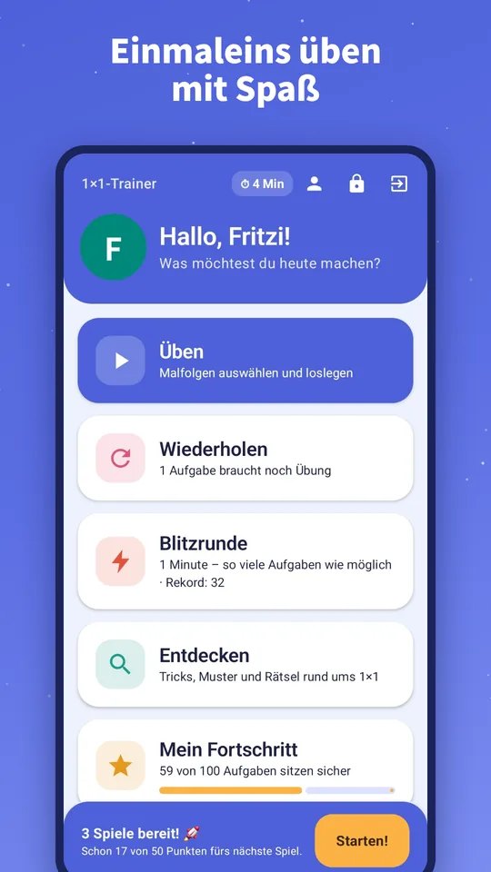
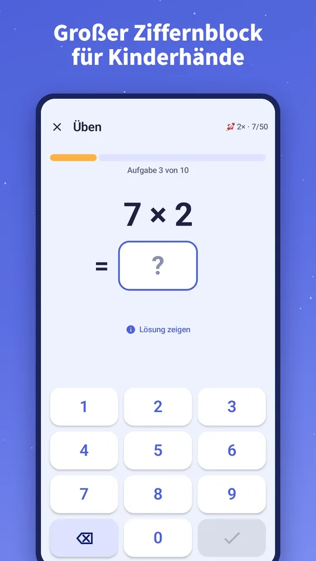
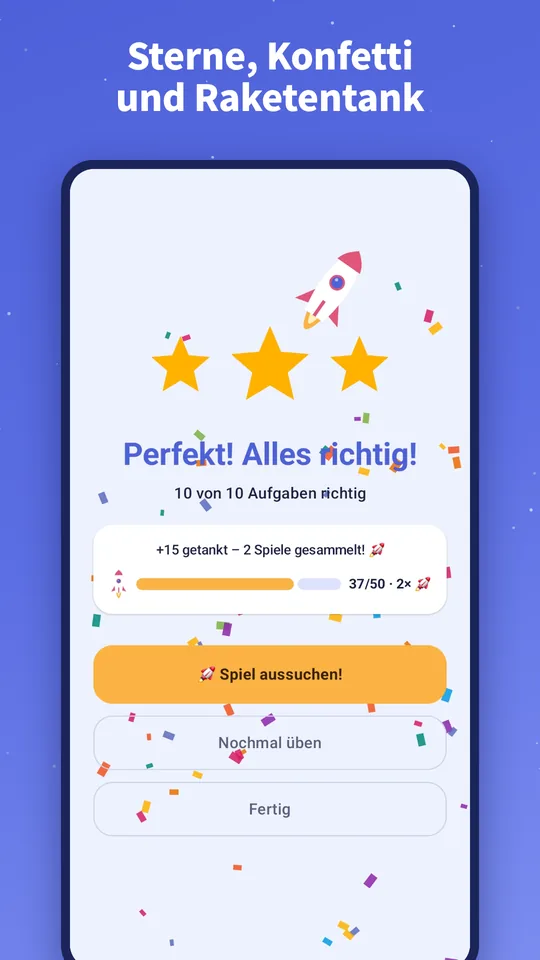
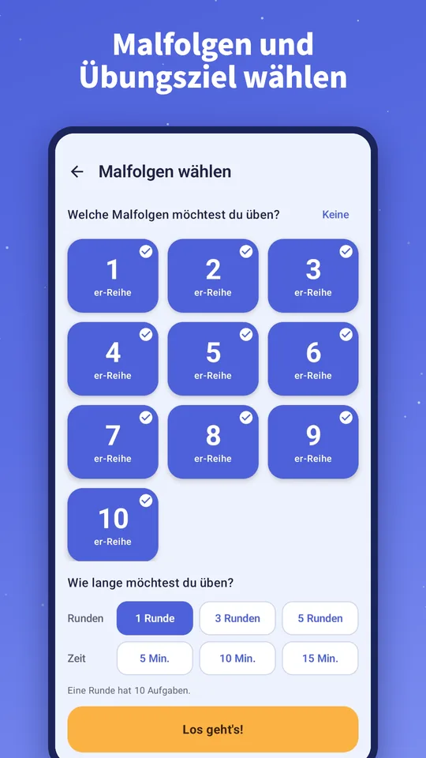
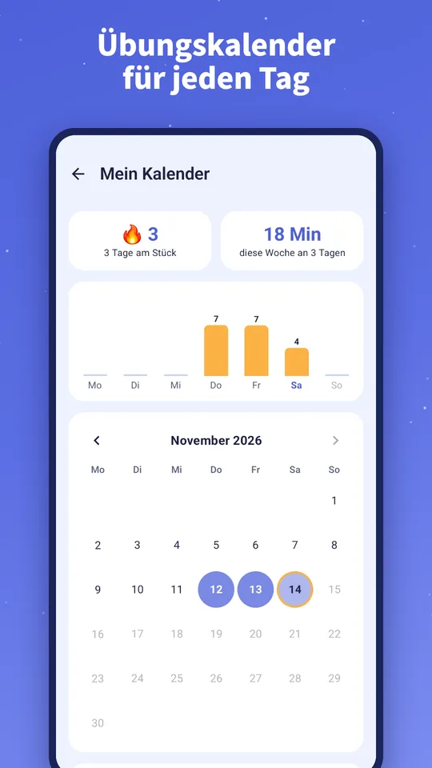

Geschlossener Test
Tester gesucht!
Der 1×1-Trainer ist fast fertig für den Play Store. Vorher muss er bei Google 14 Tage lang von mindestens 12 Testern ausprobiert werden. Hilf mit – es dauert nur zwei Minuten. Als Dankeschön bleibt die App für alle Tester dauerhaft kostenlos.
- Der Testergruppe beitreten Bei Google anmelden – mit dem Konto, das auf deinem Android-Handy genutzt wird – und auf „Gruppe beitreten“ tippen. Zur Google-Gruppe
- Test annehmen und installieren „Tester werden“ tippen, danach die App im Play Store laden. Zum Test-Link
- 14 Tage installiert lassen Ab und zu üben hilft – und Rückmeldungen freuen mich sehr.
Zurzeit nur in Deutschland, Österreich und der Schweiz. Fragen oder Feedback: cood.s@gmx.de
Warum es diese App gibt
Ich habe den 1×1-Trainer ursprünglich für meine eigenen Kinder entwickelt. Das Einmaleins ist wichtig und muss richtig sitzen – aber mir fehlte der Überblick: Welche Malfolgen können die Kinder schon? Wo haben sie noch Schwierigkeiten?
Daraus entstand die Idee: Die App merkt sich jede Aufgabe und legt genau die, die noch schwerfallen, immer wieder vor – so lange, bis sie sicher sitzen. Und das im besten Fall mit Spaß.
Mit der Zeit ist daraus eine richtige App geworden, die ich jetzt auch anderen Familien zur Verfügung stellen möchte. Ich entwickle sie in meiner Freizeit weiter und freue mich sehr über Rückmeldungen und Ideen.
So sieht die App aus







← wischen →
Was die App kann
Üben & Wiederholen
Malfolgen 1–10 frei wählen, Übungsziel nach Runden oder Minuten. Was noch nicht sitzt, kommt gezielt wieder.
Blitzrunde
60 Sekunden, so viele Aufgaben wie möglich – und den eigenen Rekord knacken.
Entdecken
Sieben Lernelemente wie Würfelfeld, Raketensprünge und Zerlegen zeigen, wie das Einmaleins funktioniert.
Raketentank & Minispiele
Richtige Antworten füllen den Tank. Ist er voll, gibt es Raketenflug, Alien-Ploppen oder Mondhüpfer.
Fortschritt & Kalender
Alle 100 Aufgaben auf einen Blick und ein Übungskalender mit der Übungszeit pro Tag.
Für Eltern
Mehrere Kinder, Elternbereich mit PIN, einstellbare Strenge, Deutsch und Englisch, Handy und Tablet.
Fragen von Eltern
Für welches Alter ist die App gedacht?
Für Kinder, die das kleine Einmaleins lernen oder festigen – meist in der 2. bis 4. Klasse. Auch ältere Kinder, bei denen einzelne Malfolgen noch wackeln, profitieren davon.
Wie sorgt die App dafür, dass schwere Aufgaben sitzen?
Die App merkt sich für jede der 100 Aufgaben die letzten fünf Versuche. Aufgaben, die noch nicht sicher sind, landen in „Wiederholen“ und kommen so lange wieder, bis sie sitzen. Falsch beantwortete Aufgaben tauchen schon wenige Aufgaben später erneut auf. 3 × 7 und 7 × 3 werden getrennt gezählt. Wie streng die App dabei ist, stellen Eltern selbst ein.
Sehe ich als Elternteil, wo mein Kind steht?
Ja. „Mein Fortschritt“ zeigt alle 100 Aufgaben farbig: sicher, fast sicher oder noch üben. Dazu gibt es einen Übungskalender mit der Übungszeit pro Tag. Im Elternbereich finden Sie den Kalender für jedes Kind.
Was kostet die App?
Zurzeit ist die App kostenlos, ohne Werbung und ohne Käufe. Für alle, die jetzt beim Test mitmachen, bleibt sie dauerhaft kostenlos.
Gibt es die App auch fürs iPhone?
Nein, zurzeit nur für Android (ab Android 7), auf Handy und Tablet, im Hoch- und Querformat.
Können mehrere Kinder die App nutzen?
Ja. Jedes Kind hat ein eigenes Profil mit eigenem Fortschritt, auf Wunsch mit Foto. Ein Konto oder eine E-Mail-Adresse braucht es nicht.
Lenken die Minispiele nicht vom Üben ab?
Ein Minispiel gibt es erst, wenn der Raketentank durch richtige Antworten voll ist – etwa alle vier bis fünf Runden. Ein Spiel dauert weniger als eine Minute. Eltern können die Minispiele im Elternbereich ganz ausschalten.
Braucht die App Internet?
Nein. Die App hat gar keinen Zugriff auf das Internet. Alle Daten bleiben auf dem Gerät; es gibt kein Tracking und keine Werbung.
Datenschutz
Die App braucht kein Internet und hat keinen Zugriff darauf. Keine Werbung, kein Tracking, kein Konto – alle Daten bleiben auf dem Gerät. Auch diese Website setzt keine Cookies und lädt nichts von Dritten.